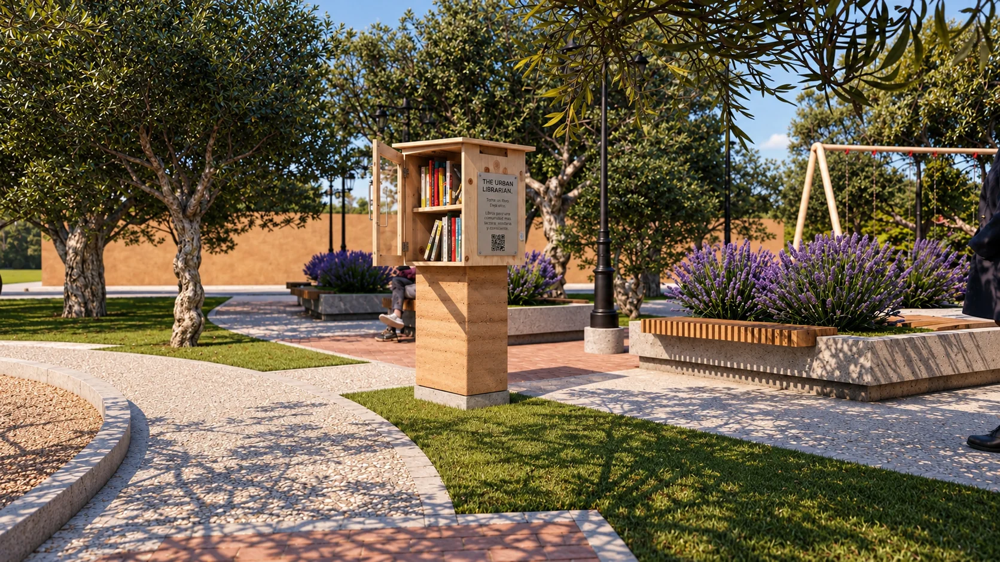
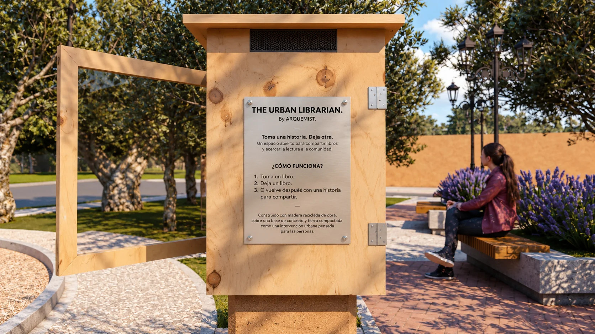

- Tipo
- Arquitectura social
- Ubicación
- Querétaro, México
- Año
- 2026
- Altura
- 1.46 m
- Estado
- En fabricación
- Proceso
-
- Idea
- Transformación
- Materia
Idea
THE URBAN LIBRARIAN nace de una iniciativa propia de ARQUEMIST. que busca acercar el conocimiento, la cultura y el intercambio de ideas a la vida cotidiana de las comunidades.
El proyecto parte de una reflexión sencilla: un libro puede contener una historia, una filosofía o una manera distinta de comprender el mundo, pero su verdadero valor se multiplica cuando alguien decide compartirlo.
Frente a los espacios tradicionales de consulta y préstamo, donde el acceso a los libros suele estar acompañado de condiciones de uso y devolución, THE URBAN LIBRARIAN propone una relación abierta y voluntaria con la lectura. Cualquier persona puede dejar un libro, tomar otro, devolverlo después de leerlo o conservarlo. No existe una obligación de intercambio equivalente; el sistema se sostiene sobre la confianza y la voluntad de compartir.
Su nombre reinterpreta la figura del bibliotecario. En este caso, no existe una persona encargada de recomendar lecturas o administrar los ejemplares: es el propio módulo arquitectónico el que asume ese papel. Una pequeña estructura urbana que acerca el conocimiento a las personas y les permite decidir libremente qué descubrir.
La propuesta entiende la arquitectura como un intermediario entre desconocidos. Quien deja un libro comparte algo de sí mismo —sus intereses, sus ideas, sus emociones— con alguien a quien probablemente nunca conocerá.
De esta manera, un objeto de escala reducida adquiere una dimensión colectiva. THE URBAN LIBRARIAN no busca únicamente fomentar la lectura, sino propiciar encuentros indirectos, despertar la curiosidad y recuperar la confianza como parte de la experiencia del espacio público.
Una arquitectura que demuestra que los gestos más pequeños también pueden construir comunidad.



Proceso
El proyecto comenzó con la intención de desarrollar una intervención accesible, replicable y de bajo impacto material, capaz de integrarse a un espacio público sin depender de una infraestructura cultural de gran escala.
La elección de madera recuperada de obras responde a una estrategia de reutilización de recursos, otorgando una segunda vida a materiales que de otro modo podrían desecharse.
El módulo incorpora aperturas en dos de sus caras, protegidas mediante elementos de acrílico, permitiendo acceder a los libros desde ambos lados. Esta decisión funcional adquiere también un significado simbólico: el conocimiento no tiene una única entrada ni una sola manera de ser descubierto.
La base de tierra compactada refuerza la relación entre el objeto y su entorno. El librero se concibe como un elemento que emerge del suelo, estableciendo una conexión material con la tierra y con la idea de un origen compartido.
Para conseguir esta expresión, se desarrolló un sistema de soporte mediante un núcleo central de madera que se prolonga desde el cuerpo del librero hasta su cimentación. Una placa metálica conecta este elemento con una base superficial de concreto armado, proporcionando el anclaje necesario para sostener el módulo.
La tierra compactada envuelve el núcleo estructural desde todas sus direcciones, ocultando el sistema de soporte y permitiendo que el librero se perciba como una pieza que nace directamente del terreno.
Una placa informativa incorpora un código QR que permite conocer el proceso creativo y la ejecución del módulo. Así, la intervención también comparte su propia historia, haciendo visible el trabajo arquitectónico que existe detrás de ella.
Más allá de su construcción, THE URBAN LIBRARIAN plantea una pregunta sobre el papel de la arquitectura en la sociedad: ¿cuánto puede transformar un espacio cuando su propósito no es solamente ser utilizado, sino generar vínculos entre las personas?
Ficha técnica
- Tipo
- Arquitectura social / Diseño urbano / Intervención comunitaria
- Dimensiones
- 1.46 m de altura
- Materiales
- Madera reciclada de obra, acrílico, concreto armado, acero y tierra compactada.
- Sistema constructivo
- Núcleo estructural de madera anclado mediante una placa metálica a una cimentación superficial de concreto armado, recubierto perimetralmente con tierra compactada.
- Visualizaciones
- ARQUEMIST.
- Créditos
- ARQUEMIST.
«La arquitectura alcanza su mayor valor cuando deja de hablar de edificios y comienza a hablar de personas».